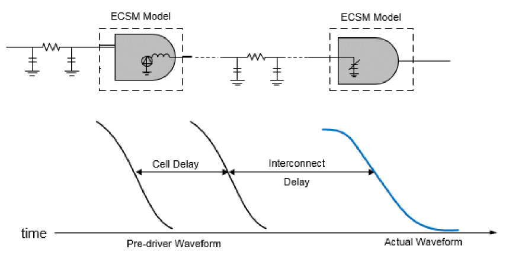
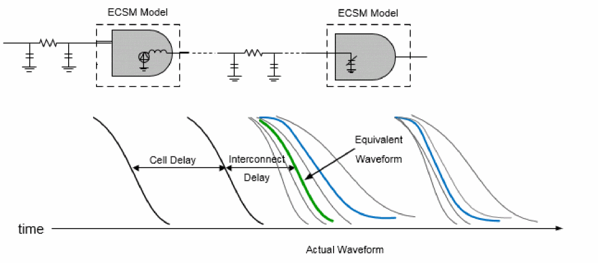
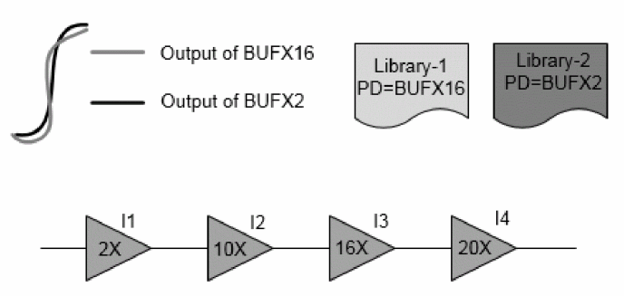

Performing Base Delay Analysis
To overcome the shortcomings of Traditional Delay Calculators, Tempus provides two different approaches for performing delay calculations. These are described below:
Equivalent Waveform Model (EWM)
To achieve accuracy, the waveform shapes are required to be included during delay calculations. The equivalent waveform model (EWM) computes equivalent receiver output based on the input waveform shapes and adjusts the interconnect delay accordingly. The adjustment in delay compensates for any inaccuracies that delay calculation might cause in the next stage due to lack of waveform shape information. The EWM approach provides a technique for producing higher accuracy results when compared to Spice.
When a stage is analyzed during delay calculation, a pre-defined waveform from the library (based on single input slew value) is used as a stimulus. When the EWM mode is not enabled, the input slew is measured from the actual waveform computed during the previous stage analysis. This may have entirely different characteristics compared to the pre-defined waveform used in the current stage. As a result, the delay impact due to waveform shape differences may be affected.
The following figure illustrates delay calculation without EWM.
Figure -7 Delay Calculation without EWM

The following figure illustrates delay calculation with EWM.
Figure -8 Delay Calculation with EWM

When EWM is enabled, the software computes the delay impact of waveform shapes on receiver cells, and computes the delay impact - thus providing an overall improvement in path delay accuracy. When EWM is enabled in SI analysis, the software provides delay adjustments based on the receiver noise response to a noisy transition. This helps to reduce the SI pessimism that will be reported if the total delay is measured on noisy waveforms at the receiver input.
Use Model
Equivalent waveform model can be enabled by using the following command:
set_db delaycal_equivalent_waveform_model no propagation
Waveform Propagation
The waveform shapes have a significant impact on delay calculations. Traditionally, delay calculation uses a single pre-driver waveform for specific slew value at the cell input to compute the response on the output of a cell.
Consider two libraries characterized with pre-driver cells, BUFX16 and BUFX2. An accurate delay on all the instances driven by BUFX16 will be reported, when the library uses BUFX16 as a pre-driver cell. In this case, the instance I4 produces more accurate results as the input waveform matches with the pre-driver waveform. The accuracy of other cells is impacted due to a difference in results for the pre-driver cell versus the actual driving cell. To facilitate actual waveform propagation through a path, the waveform propagation feature stores the actual waveform instead of a single slew value at the input of each cell.
As shown in the figure below, both the BUFX16 slew (in grey) and BUFX2 slew (in black) have the same value but their waveform shapes are different. The same slew having different waveform shapes can produce different delays. The delay accuracy is a function of input waveform shapes, even if the slew values are same. If the input waveform shape is different from the input waveform used for cell characterization, the delay accuracy will be significantly affected.
The waveform propagation feature is supported in both graph- and path-based analysis modes.
The following figure illustrates waveform impact on delay.
Figure -9 Waveform impact on delay

Requirements for Waveform Propagation
The waveform propagation using ECSM models will be more accurate with additional receiver pincap points. Cadence recommends at least eight points. The last three points can be the lower slew threshold, delay measurement point, and upper slew threshold. The rest of the five points must be selected to represent the tail waveform accurately. It is also recommended to have actual pre-driver waveform in the ECSM libraries.
Use Model
Waveform propagation can be enabled by using the following command:
set_db delaycal_equivalent_waveform_model propagation
EWM-Only vs Waveform Propagation
- Real waveform tail impact on the next stage is predicted and added to the current wire delay.
- The receiver cell is assumed to be the driver lumped load.
- Real waveforms are stored and used as input for the next stage. The input waveform tail impact is used at the appropriate point.
- Unlike EWM-Only, the waveform propagation computes accurate impact of the tail as it uses distributed parasitics of wires.
EWM and Waveform Propagation - Impact on the Flow
The base delay flow is impacted in the following ways, when you use the equivalent waveform model or waveform propagation methodology:
- Enabling equivalent waveform modeling increases runtime by 10% - with no significant increase in the memory.
- Enabling waveform propagation increases runtime by 15%. There is an 8% increase in the memory in graph-based analysis (GBA) mode, and no significant memory changes take place in the path-based analysis (PBA) mode.
Normalized Driver Waveform in Library
The normalized driver waveform (pre-driver waveform) should be added to a library while characterizing so that delay can be computed accurately (as there can be different waveforms with the same slew). There are two types of pre-drivers – active and analytical. Cadence recommends that you use the active pre-driver. The active pre-driver waveform has a longer tail than the analytical pre-driver, and thus represents the real design scenario. In the absence of NDWs (normalized driver waveform) in a library, Tempus auto-generates analytic pre-driver waveforms.
An example of a normalized driver waveform in a library is given below:
normalized_driver_waveform (waveform_template_name) {
driver_waveform_name : "PreDriver20.25:rise";
index_1 ("0.00233, 0.01301, 0.05092, 0.1233, 0.2361, 0.3943, 0.6026");
index_2 ("0, 0.083, 0.166, 0.25, 0.333, 0.417, 0.5, 0.583, 0.666, 0.75, 0.833, 0.917,1");
values ( \
"0, 0.00037, 0.0005041, 0.0006424, 0.0008009, 0.0009783, 0.001179, 0.00140, 0.00166, 0.001995 0.002375, 0.002833, 0.003389", \
"0, 0.00220 0.0029643 0.003777, 0.004709, 0.005752, 0.006935, 0.00828374, 0.00988784, 0.0117336, 0.013969, 0.0166759, 0.0199283", \
"0, 0.00862494, 0.0116002, 0.01473, 0.0184297, 0.0225117, 0.0271421, 0.0324164, 0.0386937, 0.0459165, 0.05466, 0.06571, 0.0779846", \
"0, 0.0208867, 0.0280917, 0.0357977, 0.0446304, 0.0545157, 0.065729, 0.0785015, 0.0937029, 0.111194, 0.132378, 0.15803, 0.188852", \
"0, 0.0399897, 0.0537844, 0.0685384, 0.0854496, 0.104376, 0.125845, 0.150299, 0.179404, 0.212893, 0.253452, 0.302566, 0.361577", \
Timing Library Requirement for Accurate Analysis for 16nm and Below
The ECSM/CCS library characterization for 16nm static timing analysis (STA) signoff meets the challenges of accurate timing analysis in 20nm. In order to meet accuracy demands for process nodes 16nm and below, the following are recommended:
- 8-piece pin capacitances in ECSM timing libraries
- 2-piece pin capacitance in CCS Timing libraries
- N -piece pin capacitance in CCS Timing libraries
- 2% - 98% ECSM waveform range
ECSM Libraries with 8-Piece Pin Capacitances
The 8-piece pin capacitance in the ECSM timing libraries are required to accurately model back miller current. Traditionally, the receiver pin capacitance in an ECSM library characterization is measured at the slew thresholds - that may be 30% to 70% of the VDD. As a result, the use of such thresholds in the ECSM libraries may result in some missing important data at the tail of the waveform. The 3-piece capacitance tables are extended to 8-piece tables for 20nm nodes to better capture the waveform distortions due to back miller current at the waveform tail. The selection of 8-piece pin capacitance is made such that the required 20nm waveform distortion information can be captured correctly. Since the waveform distortion happens mostly at the tail of waveforms, the pin-cap thresholds are selected so that there are more points on the tail.
Return to top